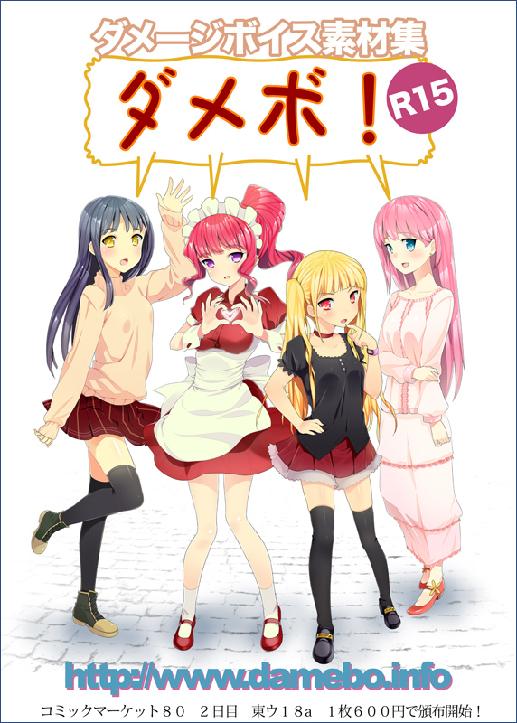

|
■ダメージボイス素材集サイト
ダメージボイス素材集の情報サイトへようこそ！
このサイトではダメージボイス素材集の関連情報を提供しております。。
damebo! damebo! damebo! damebo! damebo! damebo! damebo! damebo! damebo! damebo! damebo! damebo! damebo! damebo! damebo! damebo! damebo!
ＮＥＷＳ：早くも第２弾についての要望を頂いております。メガネの真面目っ子、白衣の先生タイプを追加検討しています。
要望、ご意見等ありましたらお気軽にお聞かせください。(8/16)
ＮＥＷＳ：ＤＬsite.com様にて、第１弾４種類のＤＬ販売を予定しております。詳細はいましばらくお待ちください。(8/16)
ＮＥＷＳ：コミックマーケット８０ ８月１３日東ウ１８ａ「Voicesample.com」にて第１弾ＣＤ版４種類を頒布しました。
お越しいただきました皆様、誠にありがとうございました。
予想以上の反響をいただき、準備していったＣＤは午前中１１時過ぎに完売してしまいました。
せっかくお越しいただきましたのに、ご購入いただけなかった方には誠に申し訳ございませんでした。(8/16)

■■■ 1CDに1声優、99ボイスを収録☆ ■■■
damebo! damebo! damebo! damebo! damebo! damebo! damebo! damebo! damebo! damebo! damebo! damebo! damebo! damebo! damebo! damebo! damebo!
■「damebo!」とは。
ダメージボイス素材集のブランドネームです。
ダメージボイス素材集（ヤラレ声、リアクションボイスなど）はゲームや、音声作品、アニメーションを制作する際に便利なモブ
（声優をキャスティングするほどではない、その他大勢的な）音声の素材集です。
■特徴
個人制作、商業利用を問わず、ご自由にご利用いただく事ができます。
damebo!は声優別での個別コンテンツとなっています。
damebo! damebo! damebo! damebo! damebo! damebo! damebo! damebo! damebo! damebo! damebo! damebo! damebo! damebo! damebo! damebo! damebo!
■ダメボ！の音声使用例 フリーのゲームエンジンＲ９を使用させていただきました。クリックしていくと、音声が流れてきます☆
■ダメボ！ＣＤ版−情報−
damebo001 声優 宇都宮なお
damebo002 声優 美咲さゆり
damebo003 声優 このえゆずこ
damebo004 声優 藍川千尋
damebo! damebo! damebo! damebo! damebo! damebo! damebo! damebo! damebo! damebo! damebo! damebo! damebo! damebo! damebo! damebo! damebo!
ダメボシリーズの制限事項：
■ご利用上の注意事項
ご自由に使用いただく事のできるdamebo！ですが、著作権放棄をしているわけではございません。
ご利用時は下記ルールをお守り下さい。
2011年8月13日施行
（1）素材自体の再販、共用は禁止します。
（2）素材を使用した結果生じた問題については、責任をおう事はできません。
（3）大きな問題が生じた際、ご利用上の注意事項は見直す場合があります。
以上
■追加音声収録請負について
後日情報を追加します。
■ご意見、ご要望をお願い致します
企画 Voicesample.com 響由人
収録制作 蒲田くま☆スタ
お問い合わせ先
damebo＠voicesample.com
０５０ー３６３１ー２５２１
|